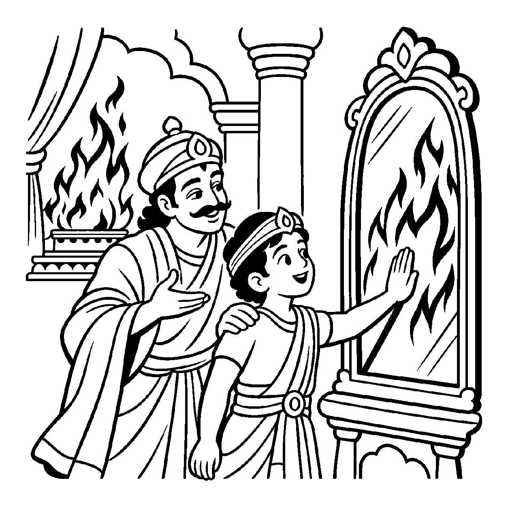

એક વિશાળ મહેલના દ્વાર પર એક મોટો, અત્યંત સ્વચ્છ કાચનો આયનો મૂકેલો છે. તેની સામેથી એક મદમસ્ત, કદાવર ગજરાજ પસાર થાય છે. અરીસામાં તે હાથીનું આબેહૂબ રૂપ, તેના વિશાળ દંતશૂળ અને સુંઢ સ્પષ્ટ દેખાય છે. છતાં પણ જો કોઈ પારખુ નજરે જુએ તો શું તે અરીસો સાચે જ હાથી બની ગયો? શું અરીસાનું વજન હાથી જેટલું વધી ગયું? કદાપિ નહીં! અરીસો કેવળ સ્વચ્છ કાચ જ રહ્યો છે અને હાથી પોતાના માર્ગ પર ચાલતો જીવંત પ્રાણી જ રહ્યો છે! તેવી જ રીતે આત્માનું જ્ઞાન સમગ્ર લોકના જડ-ચેતન પદાર્થોને ભલે જાણતું હોય, પરંતુ જ્ઞાન ક્યારેય તે જ્ઞેય પદાર્થોરૂપ બનતું નથી અને બાહ્ય પદાર્થો કદી જ્ઞાનરૂપ બનતા નથી. જ્ઞાતા અને જ્ઞેય વચ્ચે સદાકાળ રહેલા સ્પષ્ટ ભેદ અને દ્વૈતને દર્શાવતો દ્રષ્ટિકોણ એટલે 'જ્ઞાનજ્ઞેયદ્વૈતનય'.
જો જ્ઞાન અને જ્ઞેય સાચે જ સર્વથા એક થઈ જાય, તો અગ્નિને જાણતાં જ્ઞાન બળી જાય અને વિષને જાણતાં ચેતના મૃત્યુ પામે! પરંતુ એવું ક્યારેય બનતું નથી. જ્ઞાન સદા અસંગ અને શુદ્ધ જ રહે છે. જ્ઞાનજ્ઞેયદ્વૈતનય સાધકને પરપદાર્થોના મોહમાંથી મુક્ત કરે છે. તે બતાવે છે કે જગતની સુંદરતા કે કદરૂપતા એ બહારના પદાર્થોમાં છે, તારા જ્ઞાનમાં કેવળ જાણવાની શક્તિ છે.
આ નય સાધકને પરપદાર્થોના આકર્ષણમાંથી છોડાવી પોતાના સ્વતંત્ર જ્ઞાનસ્વભાવમાં લીન કરે છે.
દર્પણમાં ગજરાજ ભાસે, દર્પણ ના હાથી થાય;
જ્ઞાન જ્ઞેય દ્વૈતનયથી, ભેદ વિવેક જણાય.
જ્ઞાન રહે અસંગ સદા, જ્ઞેય રહે છે દૂર;
સાક્ષીભાવે રમણ કરતાં, પ્રગટે શાંતિ નૂર.
દર્પણ સમાન જ્ઞાનમાં જ્ઞેયો ઝળકવા છતાં જ્ઞાન જ્ઞેયરૂપ થતું નથી એમ જાણી, નિર્લેપ સાક્ષીભાવ જાળવવો.

ધવલગિરિના રાજમહેલમાં એક દિવસ મોટો યજ્ઞ ચાલતો હતો અને યજ્ઞકુંડમાં ઊંચી જ્વાળાઓ લહેરાતી હતી. મહેલના ઓરડામાં મોટા અરીસામાં તે અગ્નિની લાલ-પીળી જ્વાળાઓ ભયાનક રીતે નાચતી દેખાતી હતી. નાનો રાજકુમાર તે અરીસા સામે ઊભો રહીને થરથર કાંપવા લાગ્યો અને બૂમો પાડવા લાગ્યો: "બચાવો! બચાવો! આ કાચમાં આગ લાગી છે, આપણો મહેલ બળી જશે!" સેવકો તેને સમજાવતા હતા પણ તે માનતો નહોતો. રાજકુમારના મનમાં પ્રતિબિંબ અને મૂળ અગ્નિ વચ્ચેના ભેદ અંગે ગંભીર ભય અને અજ્ઞાન હતું.
તે સમયે રાજા ત્યાં આવ્યા. તેમણે રાજકુમારનો હાથ પકડીને સ્નેહથી તે અરીસાની સપાટી પર મુકાવ્યો! રાજકુમારે જોયું કે કાચ તો સાવ શીતળ હતો, ત્યાં ગરમીનો એક અંશ પણ નહોતો! રાજાએ હસીને કહ્યું: "બેટા! જ્ઞાનજ્ઞેયદ્વૈતનયને ઓળખ! સામે અગ્નિ ભલે બળતો હોય, પણ અરીસામાં કેવળ તેનું પ્રતિબિંબ છે, અરીસો પોતે અગ્નિ નથી બન્યો! તેવી જ રીતે તારા મન કે જ્ઞાનમાં સંસારના દુઃખો, રોગો કે ભયો ભલે જણાય, પણ તારો ચૈતન્ય આત્મા તે દુઃખોથી સાવ ભિન્ન અને શીતળ છે. જ્ઞાન કદી જ્ઞેય નથી બનતું!" આ અનુભવથી રાજકુમારનો ભય ક્ષણવારમાં ઊડી ગયો. તેને ભેદવિજ્ઞાનનો સાક્ષાત્કાર થયો અને તેનું ચિત્ત પરમ આશ્વાસન સાથે સહજ શાંતિમાં ડૂબી ગયું.
જો જીવ કેવળ દ્વૈતને જ એકાંત સત્ય માની જ્ઞાનમાં થતા જ્ઞેયાકાર પરિણમનને સાવ નકારી દે, તો જ્ઞાન અને જ્ઞેય વચ્ચેનો સંબંધ જ તૂટી જાય છે અને અજ્ઞાનતા ઊભી થાય છે. એક જ પાસાને પકડી રાખવાથી વસ્તુની સમગ્ર અનેકાંતમય સત્તા વિખંડિત થાય છે અને સાધક પોતાના જ એકાંગી આગ્રહના બંધનમાં ફસાઈને સાચી શાંતિ ગુમાવી બેસે છે.
આ નય જ્ઞાન અને જ્ઞેય વચ્ચેનો તાત્ત્વિક ભેદ બતાવી આત્માને પરભાવોથી નિર્લેપ રાખે છે, જેથી સાધક પોતાના આત્મસ્વરૂપમાં સ્થિર થાય છે.